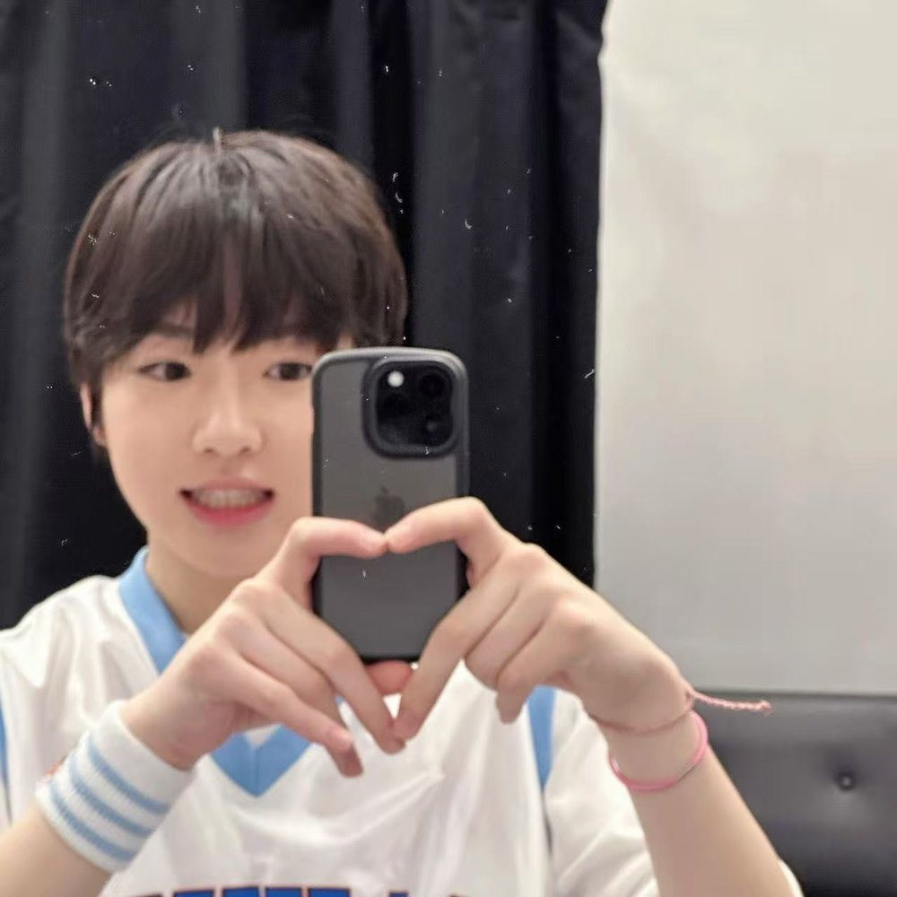

Maknae · Saitama
藤永 咲哉
SAKUYA
象征色是粉色。像小猪，也像豚鼠——脸颊鼓起来的时候尤其像。声音比人先到，笑起来眼睛先弯。

一个像小猪和豚鼠，一个像小猫、小狗和水獭。
粉色和蓝色，各自站好，又总是被拍到同一个画面里。


一个先出声，一个先看人。放在一起的时候，画面会变得刚好。
象征色是粉色。像小猪，也像豚鼠——脸颊鼓起来的时候尤其像。声音比人先到，笑起来眼睛先弯。
象征色是蓝色。像小猫，也像小狗和水獭——安静的时候最像猫。话不多，但记得住。

一个粉色的 SAKUPANG，一个奶油色的奶茶猫。这里先留位置，等官方图换上。
粉色的那一只，圆圆的，耳朵立在头顶。咲哉的象征。
奶油色的小猫，身上有几颗珍珠。勇志的象征。
只放数码和手机拍的（胶卷那批按你说的没用）。


这是框架版：配色、板块、照片位都已经搭好。
接下来可以换娃娃的官方图、补人物资料、调整相册顺序，或者加别的板块。